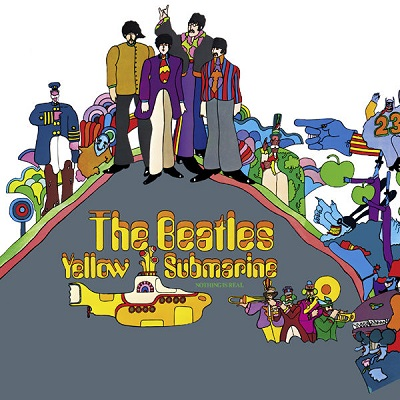

Please Please Me
1963
Beatles For Sale
1964
Revolver
1966
The Beatles ("White Album")
1968
With The Beatles
1963
Help!
1965

Sgt. Pepper's Lonely Hearts Club Band
1967

Yellow Submarine
1969
Let It Be
1970
A Hard Day’s Night
1964
Rubber Soul
1965
Magical Mystery Tour
1967

Abbey Road
1969